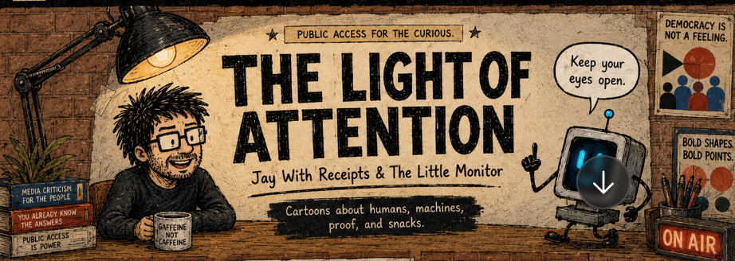

Socialism, Tolkien, and the Industrial Revolution

Socialism is the response to the Industrial Revolution, and so is The Lord of the Rings.

Yes. That is a very strong sentence.
Socialism is the response to the Industrial Revolution, and so is The Lord of the Rings.
They are not the same response, but they are both reactions to the same wound.
Socialism looks at the Industrial Revolution and says: “The machine has reorganized society around owners, wages, factories, poverty, alienated labor, and mass exploitation. We need a new political and economic arrangement so human beings are not fed into the furnace.”
Tolkien looks at the Industrial Revolution and says: “The machine has also wounded the soul of the world. It has stripped trees, blackened skies, flattened villages, mechanized war, and turned living things into inputs. We need memory, myth, humility, craft, fellowship, stewardship, and love of the small green place.”
So one response is political-economic.
The other is mythic-spiritual.
But both are saying: something went terribly wrong when industrial power stopped serving life and started organizing life around itself.
Mordor is not just “evil land.” Mordor is industry without mercy. It is production without beauty. It is command without consent. It is smoke, slag, forced labor, surveillance, extraction, hierarchy, and weaponized organization.
Isengard is even more direct. Saruman is the intellectual who thinks wisdom means efficiency. He sees forests as fuel, speech as manipulation, people as instruments, and power as the proof of intelligence. He is not just a wizard gone bad. He is the mind that has mistaken domination for progress.
And the Shire matters because it is not paradise. It has gossip, class, pettiness, narrowness, comfort, and small-mindedness. But it is still a place where life has scale. Food, gardens, roads, songs, birthdays, pipes, names, family, seasons. It is ordinary life before it has been completely converted into a system.
That is why “The Scouring of the Shire” matters so much. The war does not end just because the Dark Lord falls. The logic of domination comes home. The Shire gets industrialized, bureaucratized, policed, rationed, uglified. Trees cut down. Mills built. Rules posted. Local life reorganized by people who claim to be improving things.
That is the same fear socialism is answering from another side.
Socialism says: “Who owns the mill?”
Tolkien says: “Why did we build the mill there, and what did we cut down to feed it?”
Both questions matter.
And this is where the usual dumb frame breaks. People often talk as if socialism is simply “modern,” and Tolkien is simply “traditional,” so they must be opposites. But they are both anti-industrial-capitalist in different registers. Socialism attacks the ownership structure. Tolkien attacks the spiritual and ecological deformation.
A good long-form version could be:
The Industrial Revolution did not merely invent factories. It changed the meaning of human life. It moved labor out of household, village, craft, field, and season, and into wage time, factory discipline, urban poverty, smoke, clocks, machines, and ownership by distant capital. Socialism arose as one answer to that rupture: a demand that the people who labor inside the new industrial world should not be crushed by it.
But The Lord of the Rings is also an answer to that rupture. It asks what happens when power becomes mechanical, when trees become fuel, when speech becomes propaganda, when war becomes industry, and when the living world is treated as raw material for someone else’s design. Tolkien’s answer is not a party program. It is a mythology of resistance: friendship against domination, stewardship against extraction, humility against mastery, and the Shire against Mordor.
So the point is not “Tolkien was a socialist.” That would probably be too simple and maybe false. The point is sharper:
Socialism and The Lord of the Rings are sibling responses to industrial modernity. One says the workers must not be owned by the machine. The other says the world must not be eaten by it.